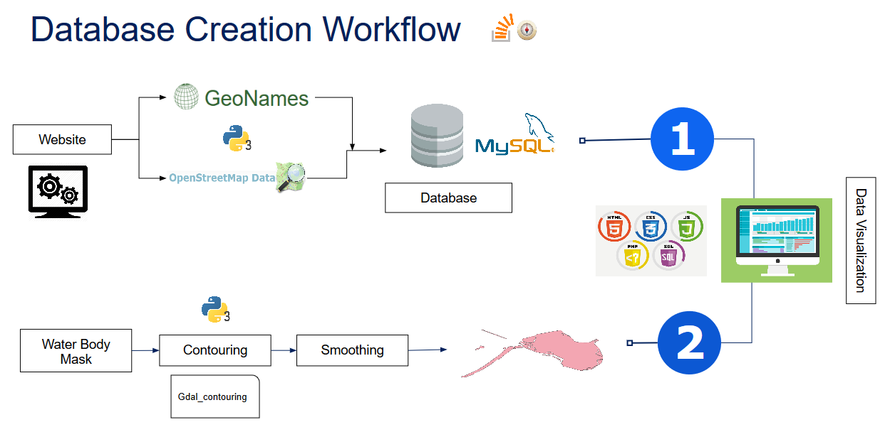

Geonames
This Web application is created as a part of our course Internet GIS.
Used HTML, CSS, Javascript, PHP and AJAX for our website creation.
The Layers are displayed from MySQL database through php request and AJAX function.
Incomplete
Still need to make the connect from the MySQL database !!
Flowchart
